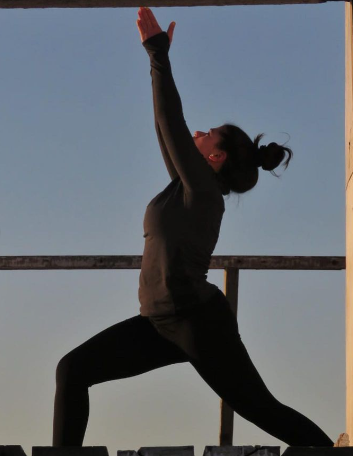
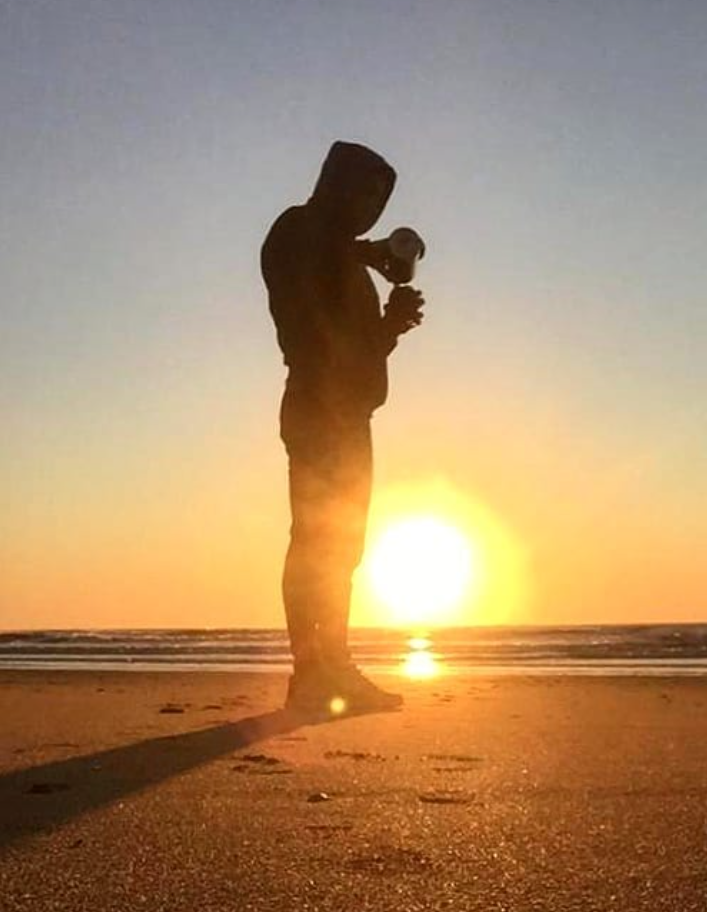

Lulea del Norte - 2
¿Quienes Somos?
Somos amantes de la vida, buscadores de un cambio de consciencia para un mundo mejor y más sustentable.
Creemos que el yoga es una de las fuerzas que contribuye a este cambio.
Millones de yoguis ya empezamos a tomar consciencia y nos unimos, el número crece exponencialmento
Somos empresa B
Las Empresas B son empresas que redefinen el sentido del éxito empresarial, usando la fuerza del mercado
para dar solución a problemas sociales y ambientales.
Luego de pasar por un riguroso proceso de certificación, la ONG B Lab USA (Sistema B en Latinoámerica)
nos ha otorgado la certificación de Empresa B a nivel global.
Asumimos el compromiso de priorizar a las personas y el medio ambiente sobre las ganancias, adoptando
las mejores decisiones en cuanto a producción, distribución y comercialización de nuestros productos.
Además, nos sometemos a evaluación constante de terceros, para sostener indefectiblemente ese compromiso.
Sabemos que es posible y gratificante emprender de manera responsable.
luleå es nuestro granito de arena.

Nuestros Profes
Yanina Silva
Estoy encantada de compartir mi historia y mi pasión por el yoga Ashtanga. Hace tres años, en Mar del Plata, comencé mi viaje en el yoga Ashtanga con una talentosa profesora.
Desde el primer día, quedé cautivada por la combinación de disciplina, fluidez y espiritualidad que ofrece el Ashtanga yoga.
Durante estos tres años, he experimentado transformaciones físicas y emocionales significativas, desarrollando fuerza y flexibilidad mientras mi mente se ha calmado.
El Ashtanga yoga es mucho más que ejercicio, es un camino de autorreflexión y autoconocimiento. Esta pasión me llevó a convertirme en profesora y compartir sus beneficios con otros.
Estoy emocionada por el aprendizaje continuo y el crecimiento que esta disciplina brinda.
Si deseas explorar el yoga Ashtanga o simplemente conversar sobre esta práctica, estaré encantada de conocerte.
Juntos, descubriremos los innumerables beneficios que el yoga Ashtanga tiene para ofrecer.
Gracias por permitirme compartir mi historia y amor por el yoga Ashtanga.
¡Espero verte en el mat pronto!

Martin Vallone
Estoy emocionado de compartir mi pasión por el Yoga Flow Surf. Hace cuatro años, en Mar del Plata, comencé a explorar el yoga a raíz de mi interés en el surf.
El surf me llevó a buscar mayor elasticidad y una conexión más profunda entre cuerpo y mente. El Yoga Flow Surf se convirtió en mi respuesta perfecta.
Esta combinación de yoga y surf no solo mejoró mi flexibilidad, sino que también me proporcionó una mayor calma y consciencia corporal.
En estos cuatro años, experimenté transformaciones tanto en mi práctica de surf como en mi vida cotidiana.
Decidí compartir esta pasión convirtiéndome en profesor, y estoy emocionado por continuar aprendiendo y creciendo en este camino.
Si estás interesado en mejorar tu surf, explorar el Yoga Flow Surf o simplemente hablar sobre esta emocionante práctica, estaré encantado de conocerte.
¡Espero verte en el mat o en las olas pronto!

Aranceles y Horario
| Profesor |
Dia |
Horario |
| Yanina |
Lunes |
12:00hs |
| Martin |
Martes |
17:00hs |
| Yanina |
Miercoles |
17:00hs y 18:00hs |
Martin y Yanina |
Jueves |
todos los horarios |